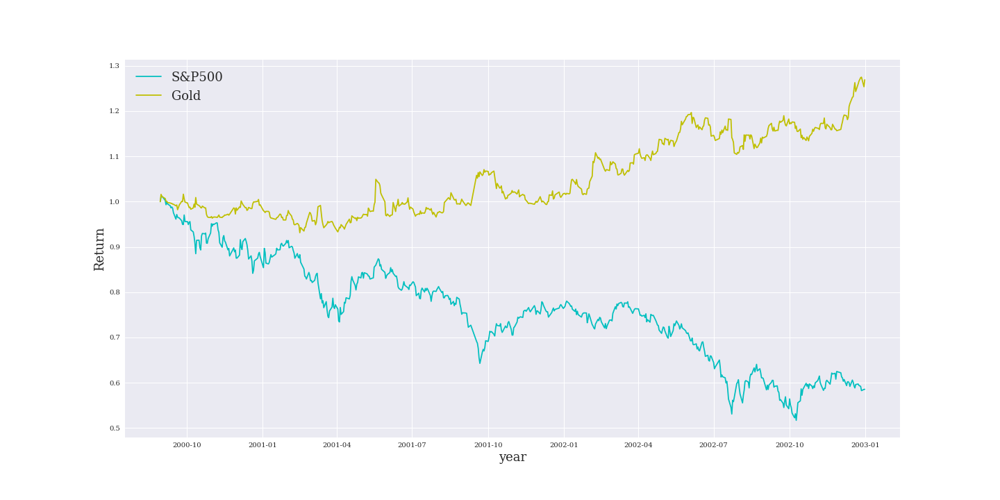
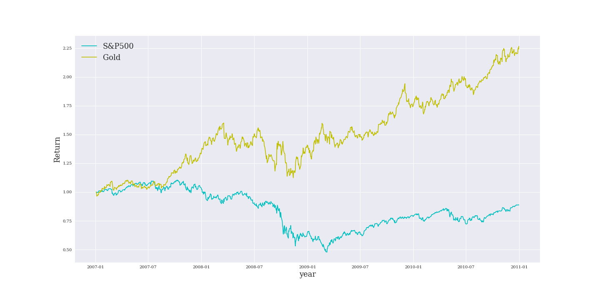
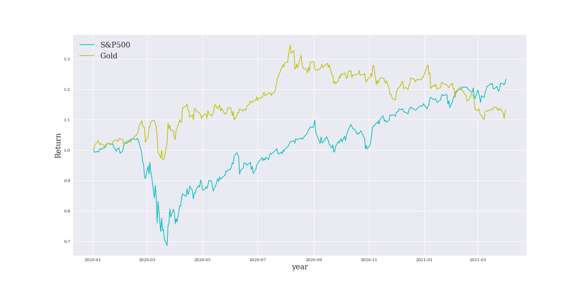
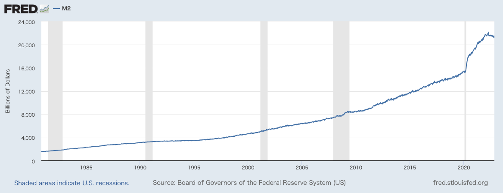
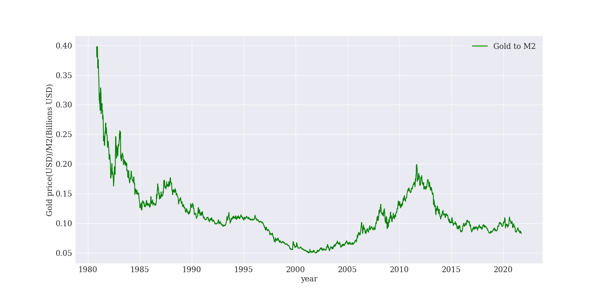
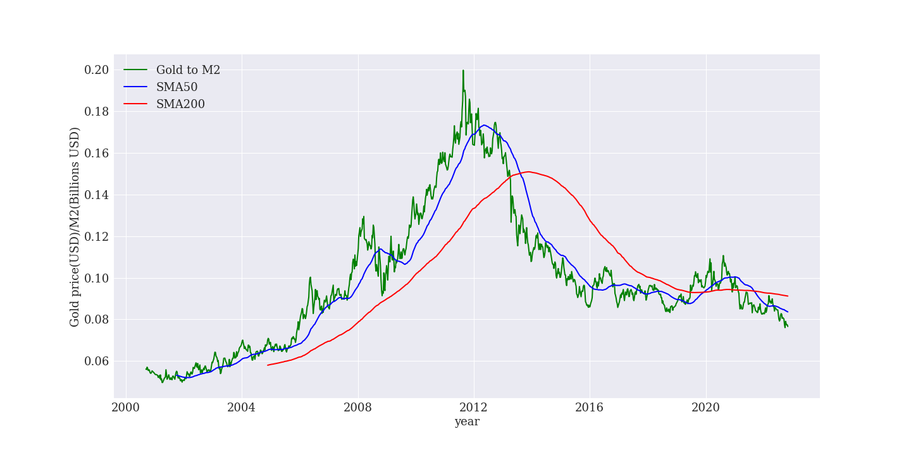
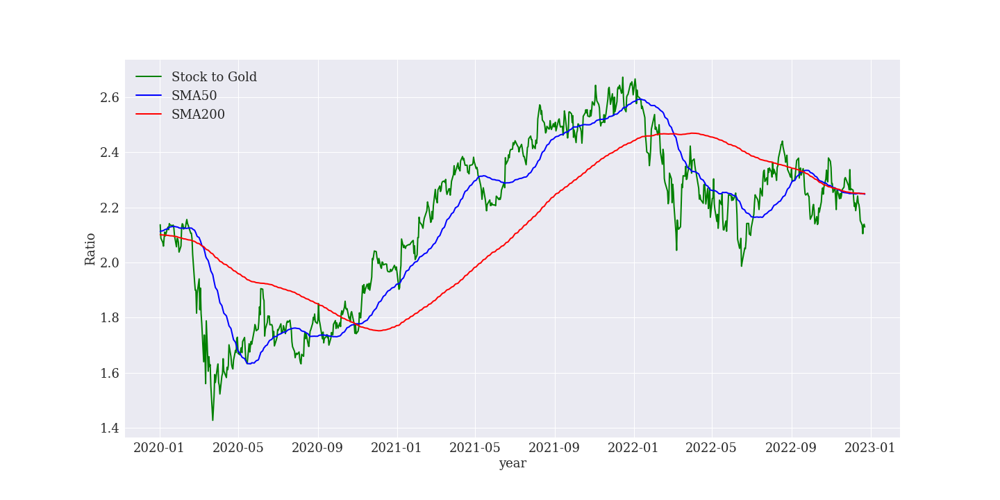

金（ゴールド）投資の魅力を新発見！非常識な資産形成
2022-12-27 by 内田裕之
- 「株式や投資信託の他に投資したほうがいいものはある？」
- 「金（ゴールド）って投資したほうがいいの？」
この記事はそんな方へ向けて書いています。
こんにちは。
ゴールドへの投資で資産形成に励むうっちゃんです。
ゴールドに分散投資すべきか悩んでいませんか？
実はゴールドは金融資産の保険とも呼ばれる安全資産なのです。
この記事ではゴールドの魅力とデメリットを紹介します。
資産形成に役立つと嬉しいです。
■目次
金（ゴールド）投資をおすすめする理由

金（ゴールド）は世界最古の金融資産であり、金融資産の保険とも呼ばれます。
今回は資産としてのゴールドの魅力を紹介します。
金融資産の保険になる
ゴールドは株式市場の暴落時に非常に強い「保険」になります。
例えばITバブルが崩壊したとき、株式（S&P500）とゴールドの値動きを比較したグラフをご覧ください。
水色がS&P500、黄色がゴールドです。
S&P500が下落する中、ゴールドが値上がりしているのが分かります。
また、リーマンショックのときはこちら。
さらにコロナショックのときはこちら。
株式よりゴールドのほうが下落幅が小さいのが分かります。
○○ショックが起こったとしても資産を守れるのがゴールドの魅力なのです。
インフレリスクに備えられる
銀行預金が0.001%の超低金利時代のいま、インフレリスクに備える必要があります。
インフレとはお金の価値が下がり、物の値段が上がることです。
例えば軽自動車は50年前は100万円で買えていたのに、いまや200万円もかかります。
また、先進国はいずれもインフレ率を毎年2%上げるように金融政策を行っています。
目標がインフレ率2%を目指すのは、失業率を最小化するためです。
そのために金融緩和を積極的に行っています。
これは日本も例外ではありません。
（参考：2％の「物価安定の目標」と「長短金利操作付き量的・質的金融緩和」）
つまり現金や預金だけではインフリスクにさらされ、お金の価値が下がってしまうのです。
インフレのリスクに備えるためには、お金をモノに替えておく必要があります。
モノとは、インフレのときに値上がりしやすい、株式、不動産、貴金属などです。
ただし、株式や不動産は景気の影響を受けやすいため、ゴールドを保有することがおすすめです。
供給量が決まっている
誰でも簡単に入手できるようなものは価値がありません。
例えば道端の石ころにお金を払う人はほとんどいないでしょう。
逆にいえば希少性の高いものは価値が上がります。
その代表がゴールドです。
ゴールドは地球の地殻から算出する資源であるため、有限の資産です。
現在、世界に存在している採掘されたゴールドは約19万トンと言われています。
毎年少しずつ鉱山から採掘されていますが、地球上での採掘は厳しくなり、質の高い生産は停滞している状況です。
つまり急激に供給量が増加して価値が下がるリスクがありません。
いつまでも価値ある資産としてゴールドを保有することをおすすめします。
かなり割安水準にある
長期的に見てゴールドは値上がりする可能性が高いです。
まず注目したいのがマネーサプライとの比較です。
マネーサプライとは世の中に出回っているお金の供給量を指します。
各国の中央銀行はマネーサプライを調整することで景気をコントロールしています。
例えば景気が過熱すればマネーサプライを減らして景気を下げようとします。
逆に不景気になればマネーサプライを増やして景気を下支えします。
マネーサプライを増やすということはお金の供給量が増えるので、お金の価値が下がります。
つまりインフレリスクにつながるのでゴールドの値上がりが期待されます。
ここで米国のマネーサプライ（M2）を見てみましょう。
（参考：FRED、M2）
マネーサプライは一貫して増えており、2020年のコロナショックから急増しています。
つまり私たちはお金の価値が下がる時代に生きているのです。
では、マネーサプライに対するゴールドの価格を見てみましょう。
指数はゴールドの価格をマネーサプライで割って作成しています。
指数は上昇すると金の価格が上昇していることを意味します。
1980年から一貫して指数は下落しており、2020年は低い水準で推移しています。
2000年からのデータにフォーカスしたのが下図です。
緑色が指数、青色は50日移動平均線、赤色は200日移動平均線です。
2012年から指数は下落しており、2020年からは0.1を下回っています。
ゴールド投資（高橋ダン著）では指数は平均的に0.1〜0.2の間くらいにあると言われています。

超カリスマ投資系YouTuberが教える ゴールド投資――リスクを冒さずお金もちになれる方法
つまりゴールドはかなり割安水準にあります。
また、株価に対するゴールドの価格も分析します。
緑色はS&P500をゴールドの価格で割った指数です。
指数の上昇はゴールドより株価が優位であることを意味します。
2022年1月から50日移動平均を下抜けて、200日移動平均線に上値を抑えられています。
指数は下落トレンドにあり、今後はゴールドの価格上昇が期待されます。
ちなみに2023年はゴールドが最高値を更新する見通しも出ています。
（参考：2023年、金（ゴールド）相場の見通し）
世界の有力投資家が買っている
米国の著名投資家ウォーレン・バフェットもゴールド関連株に投資しています。
（参考：ウォーレン・バフェットがゴールド（産金株）へ投資！？これは米国経済の終わりの始まりなのか？）
もともとバフェットはゴールドへの投資に消極的でした。
過去の記事では「金は輝くだけで役に立たない」「何かを生み出すものではない」と批判的な意見も出しています。
しかし、コロナショック以降に金鉱株（ゴールドを採掘する企業）に投資したことは業界内で衝撃が走りました。
また、中央銀行もゴールドを買っています。
中央銀行は為替介入や通貨危機が起きたときの準備資産として、ドルやゴールドを保有しているのです。
ゴールドを買うことは投資情報の分析とリスク管理能力で突出している中央銀行の戦略に倣うことになるので、安心できる投資と言えます。
ほったらかしで投資できる
ゴールドは長期でコツコツと買っていくのがおすすめです。
株式は企業が倒産すれば価値を失いますが、ゴールドは世界の共通資産であるため価値を失うことはありません。
できれば引退して年金生活になるまで積立投資をしましょう。
ゴールド投資のデメリット
ゴールドは誰もが長期で保有すべき資産と考えていますが、デメリットがないわけではありません。
株式や投資信託など他の投資商品との違いを紹介します。
利息がない
ゴールドは利息がないので、保有している間はただの輝く石ころです。
債券は半年に1回など利息を受け取れます。
株式も配当金や株主優待があります。
ETFにも配当金があり、投資信託には分配金があります。
不動産は家賃収入があります。
でも、ゴールドには何もありません。
金利に弱い
ゴールドは利息がないので金利に弱いです。
金利が高いと国債の利回りが高くなります。
国債も安全資産なので、利息を生まないゴールドは売られ、国債が買われます。
為替に影響される
ゴールドは世界中で取引されているので、価格は米ドル建てが基本です。
日本で取引するときは円貨建てなので為替（米ドル円）が影響します。
米ドル建ての価格が変わらなくても、円高になれば円貨建ての評価額は下がります。
通貨分散として米ドルの代わりにゴールドを保有するのもおすすめです。
まとめ
今回はゴールド投資の魅力とデメリットを紹介しました。
- ゴールドは安全資産であり、いまは割安水準にある。
- 金利や為替の影響を受けるので、長期でコツコツ積立投資をしよう。
この記事が面白いと思ったらTwitterやブログで紹介していただけますと嬉しいです。